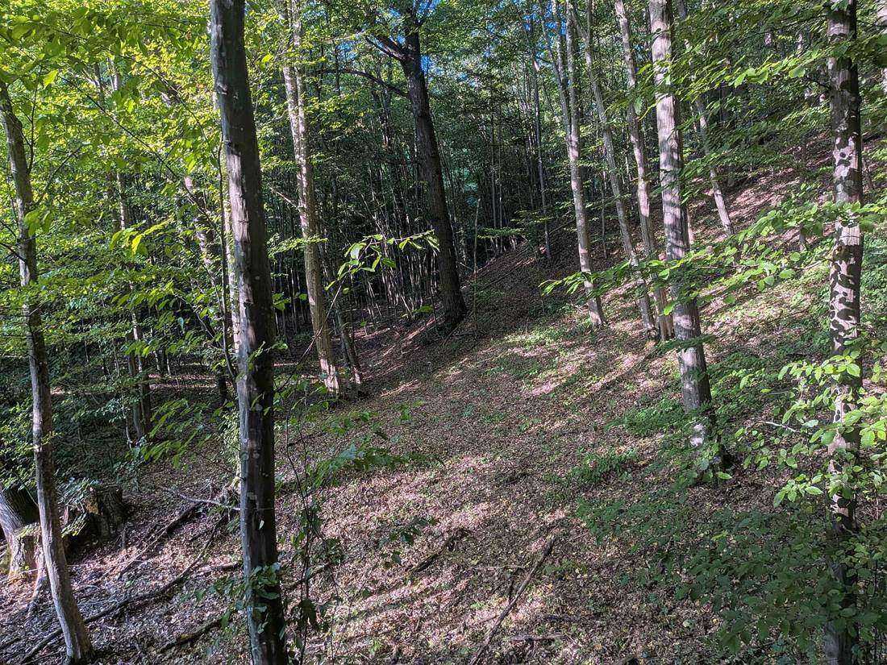

About
町から吉野へ。小さな場所のはじまり
お店の公式サイトによると、オーナーさんは都会から吉野・宮滝へ移り住み、自然の中で過ごす時間や、人と人とがふとつながる小さな瞬間を大切に思うようになったそうです。
そこで、レコードの音楽や懐かしい品々、一杯のコーヒーといった素朴なものをきっかけに、年齢や職業、趣味の違いをこえて会話が生まれる場所をつくりたいと考え、週末だけ開く小さなカフェとしてはじまりました。
- 営業は毎週土日(公式サイト・Instagramの案内による)。1〜2月、7〜8月はお休みの期間があります。
- 夏は、お店の裏手で川の家crazyというかき氷の営業をしている旨がInstagramで案内されています。
- 席は16席(カウンター・テーブル)。ご予約は受け付けておらず、来店順のご案内です。
店名「clair」の由来はお店の公式情報では確認できていません。フランス語で「明るい・澄んだ」を意味する言葉で、ページの配色や言葉は、制作側が川・山・木のぬくもりのイメージで考えたものです。

Atmosphere
音と、光と、湯気のある時間
こんな時間が流れるお店のイメージを、フリー素材の写真でお届けします(実際の店内ではありません)。



Menu
朝のセットから、サイフォンコーヒーまで
公式サイトで案内されている内容の一部です。最新のメニュー・価格は変わることがあるため、ご来店前に公式サイトやInstagramでご確認ください。


Voice
お客様の声(イメージ例)
以下は制作側が作成したイメージ例であり、実在のお客様の声ではありません。
川の音を聞きながらの朝ごはん。土日だけという特別感があって、早起きして出かけたくなりました。
流れているレコードの話から、隣の席の方とおしゃべりが弾みました。ゆっくり淹れてくれたコーヒーも嬉しい。
懐かしい小物に囲まれて、ほっとできる場所。また季節が変わったら来たいと思います。
Access
吉野川のほとり、宮滝へ
| 所在地 | 日本、〒639-3443 奈良県吉野郡吉野町宮滝82-2 |
|---|---|
| 電話 | 準備中 |
| 営業日 | 毎週土日(1〜2月・7〜8月は休業の期間あり) |
| 営業時間 | モーニング 7:00〜10:30 / カフェ 11:00〜16:00(公式サイトの案内) |
| アクセス | 最寄り駅(詳細は公式サイトをご確認ください)からバスで約20分。お車は奈良・大阪から約1時間10〜15分、駐車場6台(公式サイトの案内) |
| @cafe_de_clair |